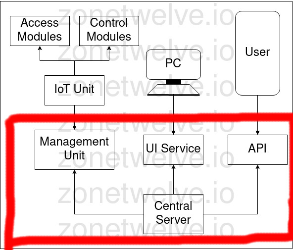
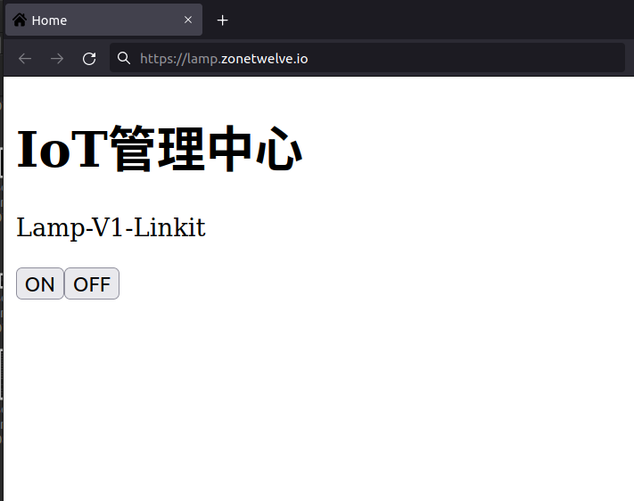

簡介 Intro
續前文 My first smart lamp[pt.1][hardware] 我們知道 hardware 的架構已經是如何被設計的了，所以下一步就是透過媒合兩個服務，接著就會介紹透過 TCP / HTTP 等方式去搭建兩個服務的連線並提供即時控制與狀態的取得，廢話少說開始進入正題。
架構 Structure
繼上篇架構 我們接著就是要做 Central Server 所有可能的元件。
- Management Unit (for IoT Unit)
- UI Service (for User)
- API (for user get access from Management Unit)

Node.js Server
目前我使用 Express 以及 Native HTML/CSS/JS 進行雛型的設計，為了進行最大程度的模組化以便未來擴充或者修改整個軟體架構，因此採用了以上的設計。
UI Service
其實不用我多說架構就是透過 app.use("/service", ui_service); 將前端的服務直接提供給使用者，為了加強使用者體驗，可以搭配 PWA (Progrssive Web Application) 讓使用者可以在低網路能力的情況下操控設備。
目前我簡單的建構了一個 home page

簡簡單單的一個界面，簡單的使用 fetch 寫了一個取得所有裝置（偷懶）以及生成控制元件的 JS
API
因為操作設備可以簡單分為簡種可能，[GET] 取得資源、[POST] 新增資源、[PUT] 修改資源、[DELETE] 移除資源，聰明如雪你的可能注意到了，這就是 RESTful API，所以我們可以簡單根據裝置、使用者需要的操作設計 API。
API Sample
- [GET] /devices # 取得裝置清單
目前是直接將所有設備設為所有人可以存取，所以還沒有其他的 method。 - [GET] /status # 取得裝置的狀態
- [PUT] /status # 修改裝置的狀態
其實我偷懶把 POST 寫成 PUT，因為 status 不需要 POST
Management Unit
目前為了方便測試裝置，現在採用 TCP (建議使用 TCP Connection with SSL/TLS)，並設計簡單的指令集，至於為什麼不使用 MQTT 最主要的理由就是我打算重頭設計整套 IoT Service。(絕對不是因為我偷懶)
理想上應該將 Management Unit 的服務另外寫再其他的地方，而不是合併在同一個 Server，因為可以增加服務的彈性以及相關的安全性。